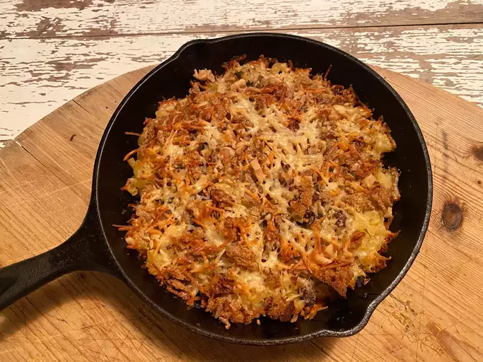

Homemade Mac And Cheese

Description
This classic baked mac and cheese recipe with a buttered bread crumb topping is creamy and comforting.
It's easy to make the cheese sauce from scratch on your stovetop, starting with a roux and adding milk, Cheddar, and Parmesan, resulting in a rich,
decadent sauce that coats every nook and cranny of the noodles. Serve this comfort-food macaroni and cheese casserole with grilled meats, sloppy Joes,
fried chicken or alongside a salad for a meatless dinner.
Ingredients
- Macaroni
- Butter and flour
- Milk
- Cheese
- Seasonings
- Bread crumbs
Steps
- Boil the noodles: Boil the macaroni in salted water until the noodles are al dente.
Drain and transfer to a prepared baking dish.
- Make the cheese sauce: Melt butter, then whisk in the flour. Whisk in the milk,
bring to a simmer, and stir in the cheeses.
Season with salt and pepper and continue simmering until the sauce is thick.
Pour the sauce over the noodles and stir.
- Make the topping: Melt two tablespoons of butter in a skillet, add the bread crumbs,
and toast until the crumbs are brown. Spread the topping over the macaroni and cheese, then sprinkle with paprika.
- Bake the mac and cheese: Bake in the preheated oven until the topping is golden brown.